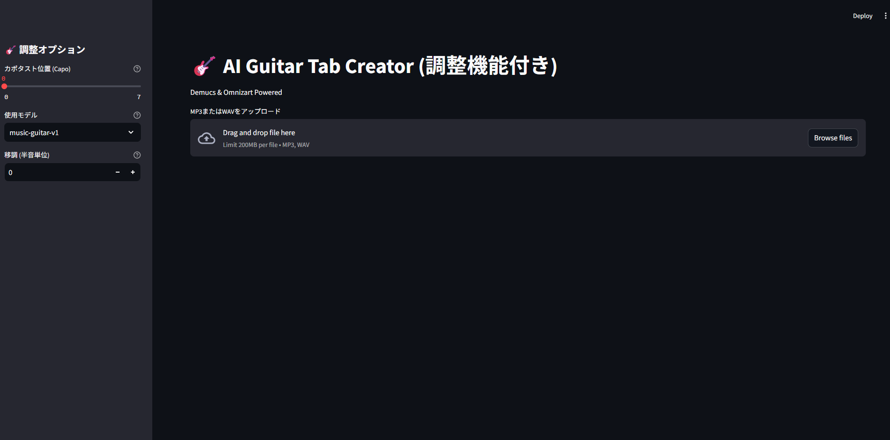
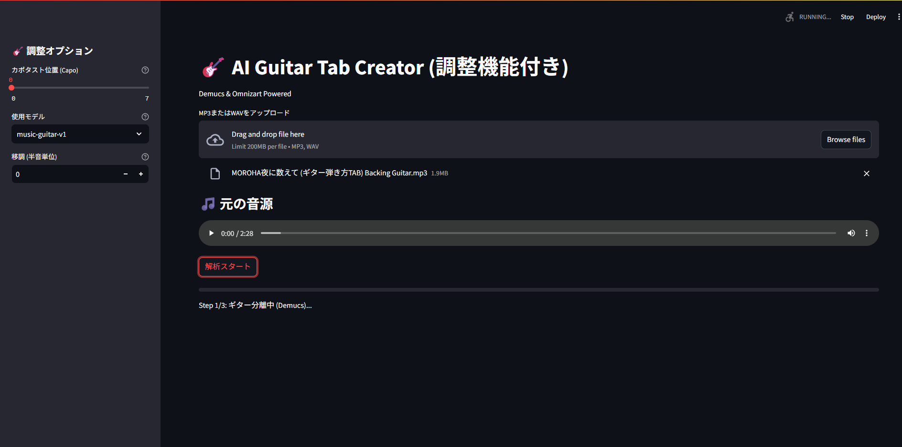
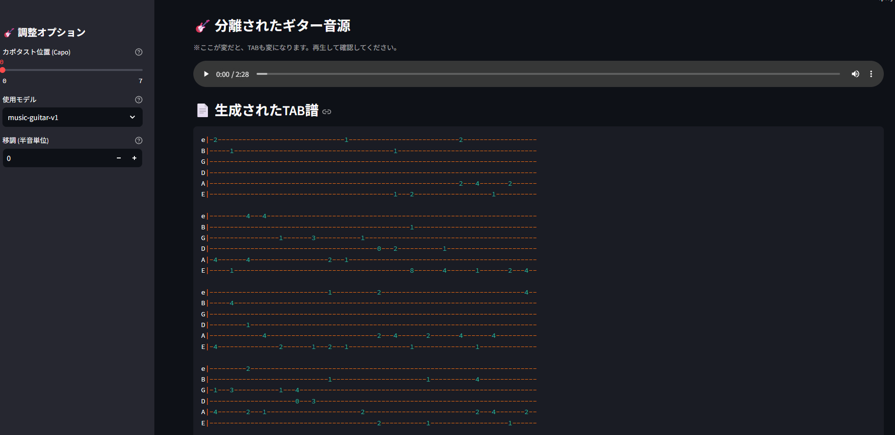

Guitar Tab AI
ギター演奏のMP3／WAV音源をアップロードするだけで、AIが楽曲からギターパートだけを抽出し、自動でTAB譜（タブ譜）を生成するWebアプリです。耳コピにかかる時間を大幅に短縮することを目的に開発しました。
このアプリはDemucs／Omnizartによる音源分離・解析処理を行うため、実行にはGPU環境を含むローカルセットアップが必要で、Web上での公開デモは用意していません。代わりにこのページでは、実際の操作画面のスクリーンショットを使って一連の流れを紹介します。
概要
バンドスコアが存在しない楽曲や、耳コピが難しいフレーズに対して、AIの力を借りてTAB譜の下書きを自動生成するツールです。Streamlitでシンプルなアップロード画面を用意し、裏側ではDemucsで楽曲からギター音源を分離、Omnizartで音高・タイミングを解析してTAB譜に変換しています。
使い方の流れ
音源をアップロード
画面左の「調整オプション」で、カポタストの位置・使用するAIモデル・移調（半音単位）を事前に設定できます。中央のアップロード欄にMP3またはWAVファイルをドラッグ＆ドロップするか、「Browse files」から選択します（200MBまで対応）。

アップロード前の初期画面。左側で解析条件を設定する。
音源を確認して解析を実行
ファイルをアップロードすると、元の音源がプレイヤーで再生確認できるようになります。内容に問題がなければ「解析スタート」ボタンを押すと処理が始まり、画面下部に進捗が表示されます。最初のステップは「Step 1/3: ギター分離中（Demucs）...」で、ここで楽曲からギターパートのみを分離しています。

アップロード済みの音源を再生確認し、解析をスタートした直後の状態。
分離音源とTAB譜を確認
解析が完了すると、ギターのみが分離された音源と、自動生成されたTAB譜（6弦分のタブ譜形式）が並んで表示されます。カポタスト位置や移調の設定を変更すると、再解析なしでTAB譜の表示にも反映される仕組みです。生成結果はそのままダウンロードして練習用に使えます。

分離されたギター音源と、自動生成されたTAB譜の表示結果。
主な機能
カポタスト位置の指定
0〜7フレットの範囲でカポ位置を設定し、実際の演奏フォームに合わせたTAB譜を生成できます。
使用モデルの選択
解析に使うAIモデル（music-guitar-v1など）を切り替えられ、楽曲の傾向に応じて使い分けが可能です。
移調（半音単位）
原曲のキーを変えずに弾きたい場合などに、半音単位での移調をワンクリックで反映できます。